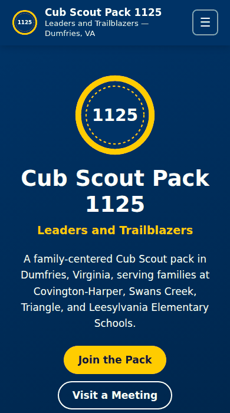
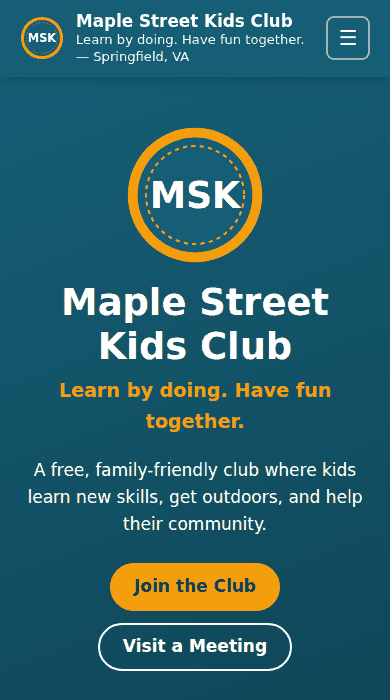
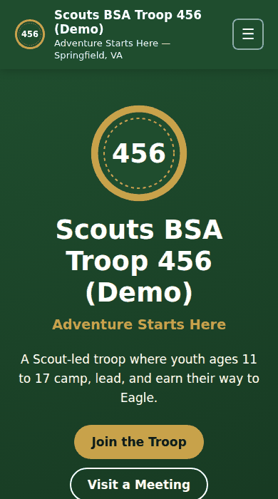
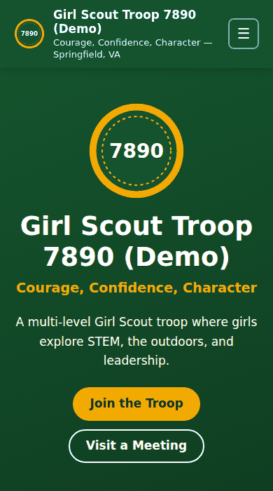
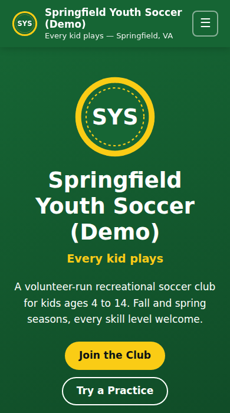

Free • Open source • No coding
A website for your Scout unit or kids club, live in 30 minutes
Fill in one settings file with your meeting times, contact email, and events. GitHub builds and hosts the site for free. Made for Cub Scout packs, Scouts BSA troops, Girl Scout troops, and any kids club.
Use this template See examples
- $0hosting on GitHub Pages
- 15–30 minstart to live site
- 1 fileto edit: site.jsonc
See It in Action
Every example below was built by this template from one settings file. Click to explore the full site.

Real pack Cub Scout Pack 1125 Dumfries, VA •cub-scouts preset

Demo Kids Clubkids-club preset (the default)

Demo Scouts BSA Troopscouts-bsa preset

Demo Girl Scout Troopgirl-scouts preset

Demo Youth Soccer Clubsoccer preset
Pack 1125's settings are in examples/pack-1125.jsonc. Copy them as a head start for your own pack. The pack's own hand-built site, with its custom emblem and photos, is at dmvthrowers.club/pack1125-dumfries.
Deploy in 4 Steps
You need a free GitHub account. Everything happens in your web browser.
-
Copy the template
Click Use this template → Create a new repository. Name it (e.g.
troop123-site), keep it Public, and click Create repository.1 minute
-
Turn on GitHub Pages
In your new repository: Settings → Pages → Source → GitHub Actions. That's the only setting.
1 minute
-
Fill in your details
Open
site.jsonc, click the pencil icon, and work top to bottom. Pick your preset, then add your name, meeting times, email, leaders, and events. Every line has a note. Click Commit changes.10–25 minutes
-
You're live
Open the Actions tab and wait for the green check (about a minute). Your site is at
https://YOUR-NAME.github.io/YOUR-REPO/. Share it!1 minute
What you edit
One file, site.jsonc. The preset fills in the rest.
{
"preset": "cub-scouts",
"group": {
"name": "Cub Scout Pack 1125",
"number": "1125",
"tagline": "Leaders and Trailblazers",
"city": "Dumfries", "region": "VA"
},
"meetings": {
"summary": "1st & 3rd Thursdays, 6:30–7:30 PM",
"location": "Covington-Harper Elementary, Dumfries VA"
},
"contact": { "email": "admin@pack1125.org" },
"events": [
{ "date": "2026-11-05", "title": "Bottle Rocket STEM Night" }
]
}Or let an AI agent do it
Paste this into Claude Code or another coding agent after step 2:
Set up my group's website from this repository.
Read AGENTS.md first. Ask me for our preset, name,
number, town, meeting times and place, contact email,
cost, leaders (with their OK), and upcoming events.
Edit site.jsonc only, run the build and the check,
fix every warning, then push to main and confirm
the GitHub Pages site is live.The agent instructions in AGENTS.md keep it to your facts and your kids' privacy rules.
Pick Your Preset
| Preset | For | Groups page |
|---|---|---|
kids-club | Any kids club or youth group (default) | Age groups |
cub-scouts | Cub Scout pack (Scouting America) | Dens: Lion → Arrow of Light |
scouts-bsa | Scouts BSA troop (Scouting America) | Ranks: Scout → Eagle |
girl-scouts | Girl Scout troop (Girl Scouts of the USA) | Levels: Daisy → Ambassador |
sports-club | Any youth sports club | Teams by age |
soccer | Youth soccer club | Teams: U6 → U14 |
baseball | Youth baseball or softball league | Divisions: Tee-Ball → Juniors |
football | Youth flag or tackle football club | Teams: Flag → Seniors |
basketball | Youth basketball club | Teams: Rookies → Seniors |
Outside the US? Set the language and date style, write costs in your currency, and copy a preset for your national organization. The README lists every spot to change.
What's Included
- 10 pages: Home, About, Join, Groups, Calendar, Gallery, Resources, FAQ, Contact, Privacy & Safety
- Events that tidy themselves: past events drop off automatically every week
- Works on every phone: big tap targets, readable text, no sideways scrolling
- Accessible: color-contrast warnings, keyboard navigation, skip link, alt-text checks
- Private by design: no cookies, trackers, ads, or outside fonts
- Locked down: strict Content Security Policy and an automatic check before every publish
- Found on Google: titles, descriptions, sitemap, and FAQ answers search engines understand
- Your look: your colors, plus a generated emblem with your unit number (or add your own logo)
- Optional extras: Google Calendar, photo gallery, custom domain, your own page sections
What It Costs
| Item | Cost |
|---|---|
| Template | Free forever (public domain, Unlicense) |
| Hosting on GitHub Pages | Free for public repositories |
| Or hosting on Cloudflare Pages or Vercel | Free plans (see the README for setup) |
Address like yourname.github.io/troop123 | Free |
Your own domain, like troop123.org (optional) | About $10–20 per year |
Questions
Do I need to know how to code?
No. You edit a text file in your browser. If you can fill in a form, you can do this. The README walks through every step, and an AI coding agent can do it for you.
Is it really free?
Yes. The template is public domain, and GitHub Pages hosts public sites for free. The only optional cost is your own domain name.
How do I update the site later?
Edit site.jsonc again. Add new events, change meeting times, list new leaders. Commit, and the site updates in about a minute.
What about photos of kids?
Post photos only with written permission from a parent or guardian, and never with names. The README explains how to resize photos and remove location data, and the site's Privacy & Safety page tells families how to ask for a photo to be removed.
Is this an official Scouting America or Girl Scouts product?
No. It's an independent, volunteer-made template that uses program names only to describe what units do. It includes no official logos or badges. If you add them, follow your organization's brand guidelines.
Can we use our own domain?
Yes. Buy one from any registrar, then enter it in Settings → Pages → Custom domain. The README has the exact DNS records.
Something went wrong. Now what?
A red X on the Actions tab means the automatic check caught a problem, usually a typo in site.jsonc. Click the run for a plain-English message. Your live site stays as it was until it's fixed.